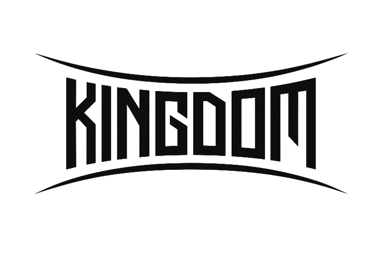
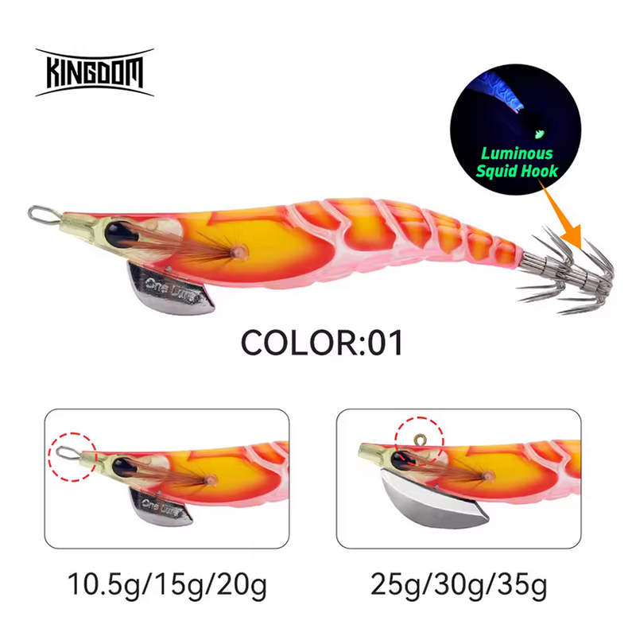

Egis Low Cost
Inicio
Señuelos
YAMASHITA
DTD
YO-ZURI
LETOYO
KINGDOM
SQUID KING
OTROS
Componentes
Color Egis
Acerca de

KINGDOM REINO – Análisis completo (Color 01)

✅ Egi natural tipo gamba, ideal para pesca diurna y calamares recelosos.
🎨 Características
Diseño:
Cuerpo segmentado tipo gamba con acabado translúcido, muy natural en el agua.
Color base:
Naranja y amarillo con zonas rosadas, combinación clásica activadora.
Ojos:
Ojos grandes con buen contraste, generando un punto de ataque claro.
Coronas:
Coronas con leve luminiscencia, útiles como referencia visual, pero no diseñadas para pesca nocturna intensa.
Pesos disponibles:
10.5g / 15g / 20g y 25g / 30g / 35g, cubriendo pesca superficial y profunda.
🌤️ Condiciones ideales de uso
🌅
Amanecer y atardecer:
Muy efectivo gracias al color cálido y natural.
🌊
Aguas claras:
Excelente; el acabado translúcido resulta poco agresivo.
☁️
Días nublados:
Buen rendimiento manteniendo naturalidad.
🪨
Zonas mixtas:
Funciona bien en arena y roca.
🌙
Noche con luz ambiental:
Aceptable; las coronas aportan referencia, pero no sustituyen un egi glow.
🧠 Comportamiento esperado
👉 Movimiento natural que inspira confianza.
👉 Ideal para calamares recelosos o presionados.
👉 Perfecto para pesca lenta y técnica.
👉 Buen egi de continuidad cuando colores agresivos no funcionan.
⚙️ Resumen práctico
Condición
Eficiencia
🌊 Agua clara
🟢🟢 Muy alta
🌅 Amanecer / Atardecer
🟢🟢 Muy alta
☁️ Día nublado
🟢 Alta
🦑😴 Calamares pasivos
🟢🟢 Muy alta
🌙 Noche con algo de luz
🟡 Media
🛒 Comprar KINGDOM REINO